Ejercicios interactivos de progresiones geométricas
Arrastra cada progresión geométrica a su término general:
1
| an = 2 · 3n−1 | an = 2n−1 | an = 5n−1 | |
| an = (2, 6, 18, 54, 162, ...) | an = (2/3, 2, 6, 18, 54, ...) | an = (1, 2, 4, 8, 16, ...) | an = (1, 5, 25, 125, 625, ...) |
Di si las siguientes progresiones son geométicas o no:
2La sucesión (an) = (12, 48, 192, 768, ...) es una progresión geomética.
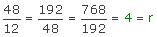
Por tanto, la sucesión sí es una progresión geométrica de razón r = 4.
Y su término general viene dado por:
an = 12 · 4n − 1 = 3 · 4n
3La sucesión (an) = (3, 3, 3, 3, 3, ...) es una progresión geomética.
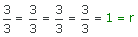
Por tanto, la sucesión sí es una progresión geométrica de razón r = 1.
4La sucesión (an) = ( −1, −3, −9, −27, −81, ...) es una progresión aritmética.
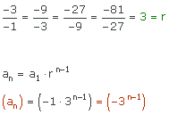
5La sucesión (an) = (20, 40, 60, 80, ...) es una progresión geomética.
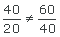
Por tanto, la sucesión no es una sucesión geométrica.
Completa con lo que se pida en cada caso:
a1 =
r =
a1 = 5
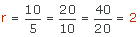
a3 =
r =
a3 = 5.78
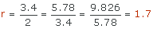
r =
a6 =
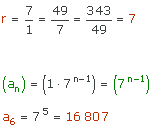
r =
b8 =
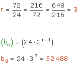
Sabiendo que los términos dados pertenencen a una progresión geométrica, completa los datos que se piden:
a1 =
r =
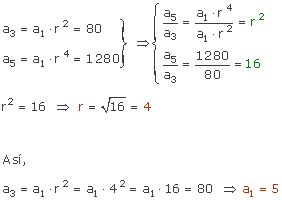
| a1 = | |
r =
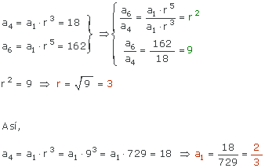
a5 = 256, a8 = 16 384
a1 =
r =
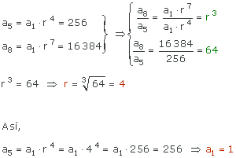
a1 =
r =
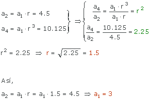
Completa sabiendo que los números son términos de progresiones geométicas:
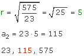
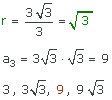
Si no te has dado cuenta de que se puede calcular la razón como lo hemos hecho e interpolas como indica la fórmula se pueden complicar un poco los cálculos, pero los resultados serían los mismos:
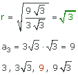
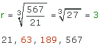
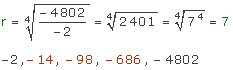
Responde:
Calcula la suma de los cinco primeros términos de la progresión geomética (an) = ( 1, 7, 49, ...)
S5 =
r = 7 : 1 = 49 = 7 = 7
Los cinco primeros términos de la sucesión indicada son: 1, 7, 49, 343, 2 401
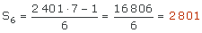
Calcula la suma de los primeros 4 términos de la sucesión (an) = (3 · 2n − 1)
S4 =
De la expresión del término general deducimos:
 r = 2
r = 2
 an = (3, 6, 12, 24, 48, ...)
an = (3, 6, 12, 24, 48, ...)
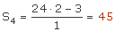
Calcula el producto de los cuatro primeros términos de la progresión geométrica (an) = (5 · 3n − 1)
P4 =
De la expresión del término general deducimos:
 r = 3
r = 3
 an = (5, 15, 45, 135, 405, ...)
an = (5, 15, 45, 135, 405, ...)
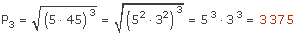
Si tienes dudas puedes consultar la teoría